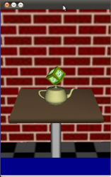

Qt Sensors - Cube House QML Accelerometer example
The Cube House example demonstrates the use of the accelerometer to drive a camera to create a pseudo-3D effect.

Overview
To write a QML application that will use the QML Accelerometer type from the QtSensors import you need to to the following steps:
Import the QtSensors declarative plugin:
import QtSensors 5.0
Add the Accelerometer QML types into your qml file.
Accelerometer { id: accel active: true dataRate: 20
In additional two properties are added to save the calculated pitch and roll values:
property double pitch: 0.0 property double roll: 0.0
Reading out the Accelerometer data can be done by implementing the 'onReadingChanged' slot and accessing the 'reading' property from the Accelerometer type:
onReadingChanged: { pitch = -(Math.atan2(reading.x, Math.sqrt(reading.y * reading.y + reading.z * reading.z)) * 180) / Math.PI; roll = (Math.atan2(reading.y, Math.sqrt(reading.x * reading.x + reading.z * reading.z)) * 180) / Math.PI; } }
By using a timer the view can be rotated using the pitch and roll properties from the Accelerometer type:
Timer { interval: 50; running: true; repeat: true onTriggered: { view.rotateY(accel.pitch); view.rotateX(accel.roll); } }
Files: